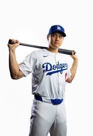

All Eyes on Shohei Ohtani
By Sachin Bhatia. October 09, 2024. 12:39PM ET.
- - Los Angeles CA.Shohei Ohtani has had a historic season. He became the first player in MLB history to join the 50 HR and 50 SB in a season club, hitting 54 home runs and swiping 59 bags. After a dismal 6-5 loss last night to the San Diego Padres, the best team in the MLB this season faces elimination tonight in game 4 of the NLDS. All eyes are on Shohei Ohtani tonight as Dodger fans are hoping for the Dodgers to even up the series tonight and force a decisive game 5 back in Los Angeles Friday night. For many fans, the Dodgers were an easy lock for a NLCS trip, if not the World Series. A big part of the Padres success was the bat of Fernando Tatis Jr. Tatis Jr through 5 2024 playoff games has a .556 batting average with 10 hits, including 4 RBIs. He had a monster 2-run home run last night to push the Padres lead in the 4th inning to 6-1. For many fans, all eyes are on Shohei Ohtani. After a huge signing of 700 million dollars, the Dodgers are hoping to make the most of Ohtani's historic season. We will see if the Dodgers have enough tonight to force a decisive game 5 back in Los Anglees on Friday night. First pitch tonight is 9:08PM ET. The Padres have Dylan Cease on the hill tonight, while the Dodgers still have yet to decide thier starter. You can catch the game on MLB TV Also on Sportnet, Sportsnet Plus, and FS1.
-
Image Source
What People Are Saying About Shohei Ohtani
"Shohei is the most dynamic player baseball has seen in decades!" - Jim Blair on the Diamond Network Podcast
Get Dodgers Playoff Tickets Now!
Don't miss out on the action. Click here to buy your Dodgers playoff tickets today!
Dodgers Playoff Tickets Pricing
Tickets start from $100. Secure your seat now before prices increase!